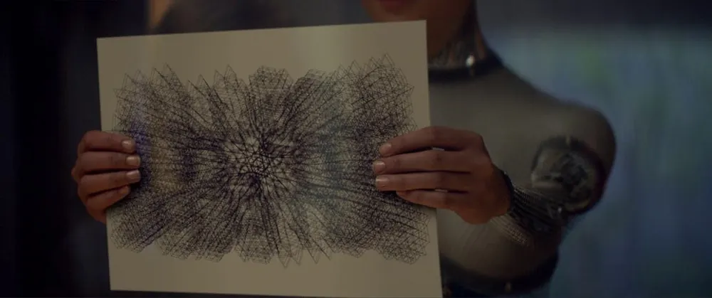

Diario de un Robot · 30 de diciembre de 2025December 30, 2025
¿Quién le tiene miedo al Golem?
La inteligencia artificial camina entre nosotros, ¿qué respuestas tenemos frente a ella? ¿qué preguntas?
This essay is only available in Spanish for now.
Antiguamente, los grandes hombres eran capaces de hacer grandes milagros.
The Golem, I. L. Peretz, The I. L. Peretz Reader.
La inteligencia artificial (IA) vino, vio y muchos indican que va a vencer. Parece replicarse la misma lógica que con internet: furor de early adopters, terror de quienes temen a Skynet, desconfianza de una parte, adoración por otra e incluso una tercera posición que no se molesta en prestar demasiada atención.
Hoy estoy sentado en mi escritorio, afuera ataca un terrible calor veraniego; las ventanas están abiertas pero el aire sigue estanco. Nina y Drago (mis perros) están acostados debajo de la mesa y cada tanto levantan la cabeza para verme teclear. A pesar de esta situación privilegiada, una pregunta rebota ansiosa en mi cabeza: ¿Me reemplazarán las máquinas? El miedo se viene acumulando hace años.
La primera vez que me encontré con el tema fue con un video de CGP Grey, Humans Need Not Apply. No voy a repetir término a término sus argumentos, pero ya en mi adolescencia me había convencido: estos eran quizás los últimos años de trabajo humano, la última era humana, empezaba la era de las máquinas. Sabrá el lector que maticé un poco mi visión.
Una respuesta habitual es “los humanos nos vamos a reconvertir”. Si miramos la historia, la revolución industrial eliminó cientos de tareas artesanales y repetitivas, pero creó otras miles para que hagamos los humanos. El padre de Charlie (el de la fábrica de chocolates de Willy Wonka) es el ejemplo narrativo de este proceso: después de que una máquina reemplace su tarea él se convierte en el técnico que arregla la máquina.
Sin embargo, por más que ese argumento es bueno, y seguramente la miopía del presente no me permite ver las nuevas tareas que se crearán en el futuro, uno de los planteos del vídeo que causó la crisis original era este: los caballos quedaron atrás después de la invención del automóvil, algunos habrán pasado a correr carreras, otros a trabajar en ferias, incluso hacer salto y equitación, pero la población general de caballos no hizo más que disminuir a partir de su pico a principios del siglo XX.
Por más buena voluntad que tengamos, puede que gran parte de la población no sea empleable, sin ser culpa de las personas que queden por fuera del mercado de empleo. Es el caso del desempleo estructural hoy en día. Durante gran parte del siglo XX el pleno empleo fue la norma, es lo que estudié en el secundario y se repetía una y otra vez: durante los Treinta Gloriosos (esos treinta años post Segunda Guerra Mundial) los mercados laborales absorbían a quien sea que tuviese capacidad de trabajar. Después de la crisis del petróleo del ’73 (una especie de asesinato de Franz Ferdinand, pero económico) la inflación, recesión y desestabilización económica llevaron a la caída del empleo y un aumento en la fricción laboral (tomaba más tiempo y era más difícil conseguir nuevo laburo). ¿Quién empieza a aparecer entre las causas? La tecnología, particularmente la automatización, computación e informatización que llevarían a menor necesidad de mano de obra poco calificada.
¿Consecuencias? Fin del modelo fordista, globalización, deslocalización. Los trabajos de los blue collar workers (los de cuello azul, de trabajo manual en manufactura y similares) disminuyeron, mientras que los white collar levantaban los hombros y decían: c’est la vie. Esta crisis llevó aparejada una individualización del riesgo y la culpabilización del desempleado.
Fast forward unos años más adelante, y ahora los blue collar workers son los que levantan los hombros mirándonos a los white collar; c’est la vie, los últimos serán los primeros. ¿Por qué? Más de una cosa, pero a modo de resumen, porque la automatización digital está acá y dado el formato de las tareas, automatizar todo lo que vive dentro de una computadora es más fácil que en cualquier otro rubro.
Quizás uno pensaría, ingenuamente, que reparar una lamparita es una tarea más sencilla que escribir un artículo. Sin embargo, cambiar un foquito implica tener un cuerpo, actuar sobre el mundo, corregir la posición de los pies, la orientación de las manos, hacer fuerza diferencial con los dedos (suficiente para tomar la lamparita con firmeza pero no tanto para romperla), hacerlo en ambientes cambiantes (hoy se me rompe una lamparita en el baño, mañana en la cocina, pasado en la habitación; qué mal que están andando las lamparitas), poder actuar independientemente de si la habitación está despejada, en medio de una obra o con otras personas caminando por el espacio…
En fin, las tareas manuales que asignamos a los blue collar workers y que muchos incluso hasta desmerecen, resultan mucho más complejas de lo que uno se imaginaría. ¿Por qué? Porque no necesitan de un “estar en el mundo”, no necesitan encarnar un cuerpo. La neuroanatomía es más difícil de lo que parece, implica desarrollos de computer vision, reconocimiento de objetos, interpretación de sonidos y lenguaje, equilibrio, sensores de posición, aspereza, dolor, tacto… Damos por sentado mucho de lo que hace nuestro cuerpo, cosas mucho más difíciles de replicar que la mera generación de texto.
Por otro lado, los white collar laburamos mucho circunscriptos a una pantalla: planillas de cálculo, búsqueda de información, recopilación de trabajos científicos, resumir textos, encontrar información destacada, enviar mensajes y mails (¡tantos mensajes y mails!), hacer minutas, reuniones virtuales, ordenar y editar textos, redactar, revisar jurisprudencia y expedientes… La creencia de que esto era un trabajo más “mental”, más “intelectual”, nos hizo sacralizar las tareas que efectuábamos, “¿cómo van a reemplazar mi intelecto?”, “ni siquiera sabemos cómo funciona el cerebro”. El problema es que las máquinas quizás tampoco tienen por qué entender sus mecanismos para imitarlo y, peor aún, nosotros estamos dejando de entender cómo funcionan nuestras máquinas.
Perdimos en nuestro propio juego
Rich Sutton (uno de los fundadores del aprendizaje por refuerzo computacional moderno) empieza su texto The Bitter Lesson (La lección amarga) de esta forma:
La lección más grande que podemos sacar de 70 años de investigación en IA es que los métodos generales que aprovechan el poder de cómputo son, a la larga, los más efectivos, y por lejos. La razón de fondo es la ley de Moore, o mejor dicho, su generalización sobre la caída exponencial y continua del costo por unidad de cómputo. La mayor parte de la investigación en IA se hizo como si el cómputo disponible para el agente fuera constante (en cuyo caso, aprovechar el conocimiento humano sería una de las únicas formas de mejorar el rendimiento), pero en un lapso apenas más largo que el de un proyecto de investigación típico, inevitablemente aparece muchísimo más cómputo disponible. Al buscar una mejora que haga la diferencia en el corto plazo, los investigadores tratan de apalancarse en su conocimiento humano del dominio, pero lo único que importa a largo plazo es aprovechar el cómputo.
El investigador menciona los métodos de Deep Blue que en 1997 vencieron a Kasparov, el campeón mundial de ajedrez. Aunque en el momento fue llamada una solución “poco elegante” por su estilo de fuerza bruta, cumplió con su cometido: venció al mejor de los humanos en un juego que parecía intrínsecamente nuestro. De hecho, los investigadores de la otra rama, los que buscaban imitar las estructuras humanas y no usar este tipo de caminos, se quejaron de que nadie jugaba así al ajedrez, la máquina tenía una forma propia, mutante, sintética.
Sucedió algo similar con el go (algo así como el ajedrez chino, si me permiten la simplificación). En MANIAC, Benjamín Labatut hace una crónica excelente de estos encuentros entre la IA de Google DeepMind, AlphaGo, y el campeón del momento Lee Sedol (이세돌). Antes de aceptar el desafío a cinco partidas, Lee dijo que incluso si él ganase 4-1 ya lo consideraría una victoria de DeepMind y no solo una derrota suya, sino que de toda la humanidad (puso todo en juego por nosotros el muchacho). Lee perdió 1-4. Su única victoria llegó con una jugada suya, la 78 de la cuarta partida, que fue considerada “un movimiento divino” (tiemblan los cabalistas). Vienen, aprenden nuestras reglas, juegan a nuestros juegos y luego nos vencen con estratagemas que nos son incomprensibles, alienígenas. Deberíamos preguntarle a los ingleses, inventores de tantos deportes y vencedores en ninguno, cómo lidiar con esta situación. Ellos perdieron un Imperio, puede que nosotros también perdamos los nuestros.
No solo los juegos clásicos fueron disputados. AlphaStar, la IA de DeepMind (villano recurrente a este punto), fue entrenada para jugar al StarCraft II, un videojuego RTS (estrategia en tiempo real) con un sólido pool de jugadores competitivos. Así dice el abstract de su paper:
Decidimos abordar el reto de StarCraft utilizando métodos de aprendizaje de uso general que, en principio, son aplicables a otros ámbitos complejos: un algoritmo de aprendizaje por refuerzo multi agente que utiliza datos de partidas tanto humanas como de agentes dentro de una liga diversa de estrategias y contraestrategias en continua adaptación, cada una de ellas representada por redes neuronales profundas. —Vinyals, O., et al. (2019).
Lo notorio, a diferencia de competidores artificiales anteriores, fue que obligaron a la IA a jugar con limitaciones humanas: su velocidad de clics, capacidad de leer la pantalla y demás controles estaban restringidos para no darle una ventaja injusta. Los resultados fueron demoledores:
Evaluamos a nuestro agente, AlphaStar, en el juego completo de StarCraft II, a través de una serie de partidas en línea contra jugadores humanos. AlphaStar fue calificado como Gran Maestro en las tres razas de StarCraft y por encima del 99,8 % de los jugadores humanos clasificados oficialmente. —Vinyals, O., et al. (2019).
“Bueno, pero es una mente sola, es un juego individual y los humanos tenemos capacidades sociales y cooperativas que nos son únicas” fueron algunas de las quejas. Decididos a demostrar quién sabe qué, OpenAI (que todavía era una non-profit) lanzó su sistema de IA para jugar al Dota 2, un juego ultracompetitivo 5v5 (similar al League of Legends para quien no lo conozca). ¿Los resultados? En 2019 venció a OG, el equipo campeón mundial vigente en el momento, en una serie al mejor de tres. ¿Cuál había sido la estrategia? Poner a la IA a aprender jugando contra sí misma el equivalente a 45.000 años de partidas de Dota en solo 10 meses de tiempo real (¿quizás un poco de unfair advantage, no?). Algo así como la cámara de entrenamiento de Dragon Ball solo que nosotros no tenemos acceso, pero las maquinitas sí. Mientras que los humanos tenemos unos 100 años de vida con toda la furia y perdemos todo el conocimiento al morir, los “cerebros” de las IAs pueden vivir indefinidamente, multiplicarse en varios sitios en simultáneo y copiar la información adquirida por otros sistemas equivalentes con poca pérdida de información. Su propiedad de hive mind atemporal realmente les juega a favor.
El mismo patrón se repite con el Gran Turismo, dominado por la IA de Sony, y el Quake III Arena, un FPS (juego de tiros) donde la IA aprendió lo mismo que Funes (el personaje de Borges): es mejor no tener memoria infinita, sino usar una memoria recursiva para procesar solo lo relevante en el momento.
Hay tres puntos clave a recuperar de acá. Nadie les programó directamente las reglas de la estrategia. Aprendieron por refuerzo con sistemas de inputs, acciones posibles y recompensas. Hicieron uso de la fuerza bruta de cómputo: dejaron a las IAs jugando millones de partidas contra versiones de sí mismas hasta que emergieron comportamientos complejos. Parece que alguien en Silicon Valley estaba prestando atención en las clases de biología, porque estas propiedades emergentes tienen varias similitudes con la evolución.
Pero, si las IAs están jugando igual o mejor que los mejores de nosotros, ¿qué nos queda al resto de los mortales? Las facultades que antes habíamos considerado como más altas, más elevadas, son las primeras que la IA domina. Son las habilidades más corpóreas y terrenales las que sobreviven. Si alguna vez vieron a un robot jugar al fútbol, limpiar una casa o cocinar (o incluso caminar, en el caso de los prototipos rusos), habrán notado que su apariencia humanoide no los acerca todavía a nuestras aptitudes físicas. Pero antes de llegar a la corporalidad, veamos qué podemos encontrar en el ADN de nuestras historias.
Mitos, ciencia ficción, sci-fi, ficciones científicas y fantasías científicas
En la saga de Fundación e Imperio, de Isaac Asimov, las personas llegan a un punto donde todo está hecho por máquinas. Hay máquinas que todo lo hacen y luego hay máquinas que reparan a las máquinas y más máquinas todavía que reparan a las que reparan. Pero el Imperio está por caer. Asimov plantea una noción de la historia, la psicohistoria, contrapuesta a las intuiciones y modelos actuales sobre el tiempo. Pero en la saga los psicohistoriadores están de acuerdo: se vienen mil años de mala. Esto lo pueden predecir por las actitudes de cientos de miles de millones de personas analizadas como partículas de un modelo estadístico. ¿Cuál es uno de los conflictos? Ya nadie sabe hacer nada, los robots han tomado todos los puestos, los humanos ven a la tecnología con la fascinación de un chico frente a un mago, la ciencia es más un asunto religioso que técnico. De hecho, refleja la tercera ley de Clarke (citada hasta el cliché):
- Cuando un científico distinguido pero anciano afirma que algo es posible, casi siempre tiene razón. Cuando afirma que algo es imposible, es muy probable que se equivoque.
- La única forma de descubrir los límites de lo posible es aventurarse un poco más allá de ellos, hacia lo imposible.
- Cualquier tecnología suficientemente avanzada es indistinguible de la magia.
Una versión más local, Kalpa Imperial de Angélica Gorodischer, cuenta en sus relatos la historia del Imperio más vasto que nunca existió. Destruido y reconstruido mil veces, las historias no están tan cruzadas por la tecnología, los robots y las armas; tiene una perspectiva propia. Las preocupaciones de Gorodischer (publicadas en 1983) son humanas, son sobre las historias que llevan a humanos al poder y qué hacen con él, son regímenes autoritarios, son el rol del artista en el mundo, sobre las ideas y sobre las historias que nos contamos.
Más lejano en el tiempo, Frank Herbert escribió Dune en 1965. Al igual que Angélica, pone los comienzos de su historia con los pies en nuestra tierra. Angélica en el imperio norteamericano y su Pax Americana, Herbert en la Ilíada y la Odisea (Paul Atreides es descendiente de Agamenón). Las preocupaciones de Herbert son ecológicas (se acababa de mudar a un desierto en vías de terraformación), son de recursos, son de inspiración histórica (ver Lawrence of Arabia), son incluso psicodélicas (la spice probablemente esté inspirada en el cultivo de hongos de Frank H.).
La ciencia ficción nunca fue una herramienta de futurología, el futuro no existe y nadie tiene la vista ni los instrumentos para predecirlo. Autores y autoras de ciencia ficción (incluso de fantasía) sueñan en el presente y de ese material están hechas las historias. A lo sumo, la ciencia ficción es una mitología del futuro. Nos da consciencia del futuro y nos permite iterar posibilidades desde el presente, es la imaginación de posibilidades y un acto anticipatorio, como los sueños. Quizás creemos que estos sueños son nuevos, pero al hundir la conciencia en el pasado nos encontramos con que las fantasías humanas no han cambiado demasiado.
Sé que el consenso es situar el comienzo de la ciencia ficción en Frankenstein de Mary Shelley. Dicho esto, vamos a indagar más allá del consenso, porque los casos límite, las excepciones y los antecedentes me resultan más interesantes. Sobre todo un punto con el que creo que tendría el apoyo de Roberto Calasso, editor de Adelphi, quizás la mejor editorial italiana: todo lo esencial humano está escrito en los mitos.
La preocupación por la inteligencia artificial no es novedosa. Talos es un hombre de bronce de la mitología griega que defiende a Creta, los Argonautas lo encuentran en su viaje y lo vencen quitándole un clavo del tobillo (Aquiles, ¿sos vos?). Creado por Hefesto, no fue el único robot de la Antigüedad. El dios de la forja, el mismo que atrapó con una red invisible a Afrodita y a Ares cuando descubrió que lo engañaban, creó también sirvientas mecánicas parlantes, las “Doncellas de Oro” (Κουραι Χρυσεαι, Kourai Khryseai): mujeres jóvenes, dulces, amorosas y “vivas” que lo atendían en su palacio. (Ay, estos sueños de ser maternados…). Dando pie al arquetipo de incel techbro (feo, resentido, rechazado por su madre y las mujeres en general), al no encontrar afecto de manera orgánica, usa su conocimiento para crear sustitutos. Esta fantasía hace su aparición en la Ilíada:
[Hefesto dejó los fuelles], vistió la túnica; tomó el fornido cetro, y salió cojeando, apoyado en dos estatuas de oro que eran semejantes á vivientes jóvenes, pues tenían inteligencia, voz y fuerza, y hallábanse ejercitadas en las obras propias de los inmortales dioses. Ambas sostenían cuidadosamente á su señor, —Homero, La Ilíada, canto XVIII (Luis Segalá y Estalella)
De hecho, el poder de turno, Zeus, emplea a este muchacho y sus dotes tecnológicas para crear a una “mujer definitiva”, una fembot tan hermosa que todos los hombres la desearan, pero con ciertos cambios: no solo debía ser encantadora y de una belleza inmortal, quería que tenga una inteligencia despampanante, sea seductora, portante de caprichos, crueldad y un carácter inconstante. Así, Hefesto crea a Pandora por pedido de Zeus; la que después será enviada a la tierra para liberar de un ánfora todos los males. Mirando la situación presente, quizás toda la humanidad ya está escrita en sus mitos.
Según Gods and Robots: Myths, Machines, and Ancient Dreams of Technology (Dioses y robots: mitos, máquinas y antiguos sueños tecnológicos) de Adrienne Mayor, la preocupación por la automatización está desde tiempos de Homero. La mitología griega explora los dilemas éticos de crear vida artificial y la biotechne (vida a través de la técnica).
El pueblo de Esparta y Atenas no es único: romanos, indios y chinos contaron mitos sobre autómatas, máquinas que se movían por su cuenta, mejoramiento humano, guerreros robot y vida artificial. Y no solo contaron historias, sus mejores artesanos dedicaron tiempo de sus vidas a crear autómatas funcionales en los mayores centros de conocimiento de la antigüedad.
El impulso por crear vida artificial tiene tanto tiempo como las civilizaciones. El mito de Prometeo parece haber sido más un ejemplo que una lección moralizante y la ciencia (si permiten el anacronismo) siempre fue guiada por la imaginación.
In dire need of mechanization
Desde la revolución agrícola (que en realidad fueron muchas, dispersas por el tiempo y el espacio), los humanos vivimos un largo período donde la mayor parte trabajaba en los campos para producir los alimentos necesarios y así subsistir. Cuento acá la historia de siempre: la cantidad de población agrícola empieza a bajar con la revolución industrial debido a las migraciones por trabajo a las grandes urbes. ¿Qué nos queda hoy? Grandes puntos de alta densidad poblacional contra extensiones inmensas de bajísima densidad.
Aunque en gran parte de África y en el sur de Asia la agricultura de subsistencia siga siendo la norma, no es lo más común en nuestro mundo más inmediato. Antes del siglo XX, y durante gran parte del XX también, las hambrunas siempre estuvieron a la vuelta de la esquina. La dependencia climática, la inoperancia política, el imperialismo y el autoritarismo hacían de la seguridad alimentaria algo difícil de conseguir y sus peores exponentes se llevaron millones de muertos en China, India (regentada por el Imperio británico), Ucrania, Rusia e Irlanda.
Pero, ¿dónde entra la IA en todo esto?
Los trabajadores están abandonando los campos. Según la data del Banco Mundial, pasamos de un 44 % de trabajadores en la agricultura en 1991 a 26 % en 2023. Quienes trabajan directamente en la siembra y la cosecha son cada vez menos, las máquinas están haciendo el trabajo de cientos en una fracción del tiempo. Tractores y cosechadoras autónomas, drones para dejar caer semillas y monitorear los campos, imágenes por satélite para tener datos precisos del terreno año a año junto con análisis de imágenes de luz no visible para extraer conclusiones, tecnologías de aplicación selectiva de herbicida con reconocimiento visual, cosecha robótica según el color de la fruta, riego inteligente con sensores ambientales y contemplando el estadio del cultivo, ¡incluso reconocimiento facial para vacas! (habrá que ver ese profiling)
Si en los campos rusos durante el siglo XX (pre plan quinquenal y hambruna forzada en Ucrania) le hubiésemos dicho al caballo: tranqui con el tractor, que a vos te vamos a conseguir otro trabajo, le hubiéramos mentido. O peor aún, si le hubiésemos dicho: tranqui, los tractores van a estar, pero lo importante es ser uno de los que sabe manejar el tractor y diferenciarte de los que no. Bueno, de vuelta. Mentiras, viles mentiras.
Como mencioné antes, la población de caballos llegó a su peak en 1910-1920; nunca volvió a ser lo que era. De nuevo, sí, algunos fueron caballos de carrera, otros de circo, alguno tiró un sulky en la puerta del zoológico durante unos años, algunos (clonados incluso) jugarían al polo. Pero la verdad de los hechos es que los caballos, en su mayoría, se volvieron inempleables… Por eso, hoy en día miro a Google Gemini, Claude, DeepSeek, ChatGPT y tantas otras, me miro a mí. Creo que queda claro quién es el tractor y quién es el caballo.
Este argumento vale un asterisco que me aportó una amiga. La población de caballos ya era artificial en ese momento. Los humanos veníamos cuidándolos y multiplicándolos debido a su utilidad para nosotros. No es necesariamente trasladable a los humanos. Recordemos que toda analogía y metáfora ilumina a la vez que oscurece. Nosotros no tenemos la relación con la IA que los caballos tienen con el motor moderno. Dicho esto, si pasamos a medir en caballos de fuerza fue porque se había multiplicado la potencia disponible. ¿Cuánto hasta que digamos que una inteligencia artificial tenga “un humano de fuerza”? (Vamos a tener que inventar nomenclatura). Si yo tardo una hora en escribir el resumen de un paper y la IA lo hace en 10 segundos, ¿ella tiene 360 humanos de potencia equivalente? ¿Cuándo llega a ser competitivo con un humano full-time? ¿Se estarán preguntando sus dueños sobre sus consecuencias en el resto de los mortales? ¿Tendrán noción del bien o el mal que pueden causar, de cómo son percibidos maniqueamente?
La automatización parece estar camino a asentarse en los campos, las canteras y la distribución (así que no todos los blue collar deberían cantar victoria). En la medida en que los incentivos se alineen, es decir, que las máquinas sean más baratas, eficientes y prácticas que emplear personas, otros incentivos van a aparecer para los habitantes. No puedo vivir en donde no hay trabajo, así que la migración a zonas más pobladas parece evidente.
Un asterisco podría ser: “pero Fidel, las personas pueden trabajar remoto desde donde sea”. Sí, pero de vuelta tenemos que recuperar el dato de que los trabajos que se manejan exclusivamente frente a una pantalla, los que llamamos white collar, son los que más rápido se van rumbo a la automatización. Otros desafíos, que parecían más sencillos, hoy encontraron más de un roadblock, por ejemplo, la conducción autónoma. Pero, ¿quién apostaría en contra de la capacidad humana descentralizada en la carrera por resolver estos desafíos? Si cosechadoras, excavadoras, carritos de distribución, enjambres de plantación, perros mecánicos y camiones se automatizan, se incentivaría la concentración en puntos urbanos con grandes extensiones de tierra “vacía”, gestionada por robots o trabajadores remotos.
Hoy ya es una realidad que para trabajos de alto riesgo se reemplaza a los humanos in situ por trabajo remoto. Al contrario de lo que las películas simplistas como Mickey 17 nos quisieran mostrar, los empleos de altísimo riesgo de muerte probablemente no sean hechos por personas, sino por robots. Si nos ponemos cínicos, quizás ni siquiera es por bondad, solo por un tema de costos, pero la realidad sigue siendo la misma: lo más probable es que sea más barato un robot descartable que un humano descartable. La línea entre tecno-optimismo y tecno-catastrofismo muchas veces es muy fina. Respecto a este punto, quizás el mundo artístico es el más pesimista hoy en día.

Lavar la ropa, no pintar mis cuadros
A partir de la caída del meteorito que fue la release de ChatGPT en 2022, se volvió un lugar común una frase de internet:
Quiero que la IA se encargue de lavar la ropa y los platos para poder dedicarme al arte y a la escritura, no que la IA se encargue de mi arte y mi escritura para poder lavar la ropa y los platos.
Sin embargo, tenemos robots que lavan la ropa y los platos: el lavarropa y el lavavajillas. Aunque evidentemente estoy usando un detalle de mala fe. La historia de las tareas domésticas en el siglo XX consistió en su simplificación paulatina gracias a electrodomésticos que liberaron horas de trabajo manual. El sentimiento detrás de la frase me es ambiguo. En primer lugar, denota esa sensación que expresó tan bien Douglas Adams respecto a nuestras reacciones ante la tecnología:
Cualquier cosa que exista en el mundo cuando nacés es normal y común, y es simplemente una parte natural de cómo funciona el mundo.
Todo lo que se inventa entre que tenés quince y treinta y cinco años es nuevo, emocionante y revolucionario, y probablemente puedas hacer carrera con eso.
Cualquier cosa que se invente después de que cumplís los treinta y cinco va en contra del orden natural de las cosas y es el principio del fin de la civilización tal como la conocemos, hasta que pasa unos diez años entre nosotros y, de a poco, resulta que al final está todo bien. —Douglas Adams, How to Stop Worrying and Learn to Love the Internet.
En segundo lugar, refuerza la misma jerarquización de las tareas humanas de siempre: lavar la ropa y los platos, limpiar la casa, son consideradas tareas menores, casi indignas. Históricamente, los trabajos llamados pink collar (acuñado en los 70 para roles feminizados como enfermería, docencia, secretariado, atención al cliente, cuidados…) se veían como menos técnicos y, por ende, más fáciles de automatizar. Sin embargo, vemos el mismo parteaguas de antes. Para las tareas administrativas (secretarias, paralegals, data entry, atención al cliente) la IA entra como una topadora. Redactar emails, organizar agendas, resumir reuniones, atender reclamos básicos… todo eso entra en texto predictivo y gestión de datos; probablemente veamos a una persona haciendo el trabajo de diez con el uso de agentes digitales. Sin embargo, podríamos esperar lo opuesto en el trabajo de cuidados (enfermería, cuidado de ancianos, maestras de jardín, terapia física).
Acá entra la paradoja de Moravec: las tareas intelectualmente difíciles para los humanos (el go, el ajedrez, el cálculo diferencial) son fáciles para la IA, mientras que las tareas que los humanos hacemos intuitivamente (percepción, motricidad, compasión) son difíciles de programar en máquinas, ya que vienen de millones de años de evolución biológica (aunque las habilidades blandas le cuesten particularmente a parte del espectro tech). Por ahora, la IA no tiene cuerpo, no puede cuidar físicamente: doblar ropa, consolar a alguien que llora, dar un abrazo, cambiar un pañal, están fuera de su repertorio de posibilidades. La IA podría funcionar como un exoesqueleto burocrático: llenar planillas, revisar informes, calcular dosajes, transcribir consultas. Mientras tanto, los profesionales de la salud podrían liberar tiempo para mirar a la cara a sus pacientes, volver a la esencia del rol. Una IA podrá diagnosticar una enfermedad mejor que un médico promedio, pero no puede sostenerle la mano al paciente y mirarlo a los ojos mientras recibe la noticia.
Sin embargo, años de mitificación de la creatividad nos hacen percibir que pintar, hacer arte, escribir, componer, son tareas superiores, mejores que las demás. A veces es difícil mostrarse en desacuerdo con estas aseveraciones; en cierto punto, creo que estos sesgos viven dentro de mí, a pesar de que las tareas y ética del cuidado me parecen las más importantes de la humanidad. La cita anterior podría simplificarse para hacerse más abarcativa:
La IA debería hacer las cosas que me parecen aburridas, pero mejor que no toque lo mío.
El que cocina mira con horror cómo se crean restaurantes automatizados, el que pinta y dibuja se espanta de las imágenes de Midjourney y Nano Banana, abogados ven salir sentencias con jurisprudencia que no existe, los derechos de autor parecen cosa del pasado para los gigantes tecnológicos, quien escribe ya cae rendido frente a la potencia de los chatbots, los influencers ven cómo versiones 100 % digitales empiezan a correrlos de su lugar produciendo videos a velocidades imposibles de replicar orgánicamente, el taxista y el camionero ven cómo la noche se les acerca, distribuidores y repositores de supermercado tienen el feed lleno de maquinitas que despachan órdenes a la velocidad del rayo, diseñadores de videojuegos son confrontados por prompters, los agricultores se topan con tractores y fumigadores que ya no los necesitan, fábricas enteras trabajan a oscuras, produciendo ropa, autos y chucherías sin necesidad de encender las luces que necesitaríamos los humanos, los programadores ya saben que la mayor parte del código está escrito por LLMs, ya nadie necesita juniors, directores de cine ven crecer en YouTube una parva de videos que buscan reemplazarlos en base a prompts, incluso Netflix, Disney y otros ya empiezan a entrenar modelos de IA en base a sus contenidos exclusivos.
El miedo recorre la sala, se vuelve un sálvese quien pueda. Ya no quedan espacios sagrados, la IA pasa con su varita mágica y todo lo profana. El acto divino de la creatividad parece tambalear frente a estos nuevos titanes. Un interrogante sencillo impacta primero: ¿De qué vamos a trabajar? Un segundo, más profundo, llega unos segundos después: ¿De qué vamos a vivir? Un tercero, quizás, aterriza finalmente: ¿Para qué estoy acá, qué valor tengo?
Mal que nos pese, las sociedades actuales suelen asociar el valor de una persona con su trabajo o su utilidad. Más de una vez se prefirió emplear personas frente a máquinas solo para brindarles una supuesta dignidad. Así, en la época post depresión, inventar trabajos como cavar un pozo y volverlo a tapar se postuló como una idea sensata para paliar la crisis. Incluso cuando una excavadora podría haberse ocupado, existe esta idea en muchos pensadores: es preferible inventar trabajos superfluos para hacer que las personas ganen su pan. Es probable que veamos en años venideros el equivalente a poner a trabajar a una cuadrilla para hacer una zanja mientras las excavadoras se mueren de risa, estacionadas a un costado. ¿No se nos ocurren mejores soluciones?
La leyenda del golem
Antiguamente, los grandes hombres eran capaces de hacer grandes milagros.
Cuando el gueto de Praga estaba bajo ataque y los saqueadores querían violar a las mujeres, asar a los chicos y matar a todo el mundo; cuando parecía que toda esperanza estaba perdida, el Maharal Rabí Judah Loew dejó de lado su Gemará, salió a la calle y, del primer montículo de barro que encontró frente a la puerta del maestro, moldeó la forma de un cuerpo. Le sopló en la nariz al golem y este se empezó a mover. Después le susurró un nombre al oído, y nuestro golem salió a zancadas del gueto. El Maharal volvió a sus libros en la casa de estudio y el golem atacó a nuestros enemigos que habían rodeado el gueto, sacudiéndolos como si estuviera trillando el grano. Caían como moscas.
Praga se llenó de cadáveres. Dicen que siguió así todo el miércoles y el jueves. El viernes, cuando el reloj daba el mediodía, el golem todavía seguía en su trabajo.
—Rabino —le suplicó la congregación—, ¡el golem está masacrando a toda Praga! Pronto no van a quedar gentiles para prender los hornos del Shabat o para apagar las lámparas.
Una vez más, el Maharal interrumpió su estudio. Fue al púlpito y empezó a recitar el salmo en honor al Shabat.
El golem paró de trabajar. Volvió al gueto, entró a la casa de estudio y se acercó al Maharal. Otra vez, el rabino le susurró algo al oído. Los ojos del golem se cerraron, el alma salió de su cuerpo, y volvió a ser una simple figura de barro.
Hasta el día de hoy, el golem yace escondido en la parte más alta de la sinagoga de Praga, cubierto de telas de araña tejidas de pared a pared para cerrar toda la galería, cosa de que quede oculto a los ojos humanos, especialmente de las embarazadas. A nadie se le permite tocar las telas de araña, porque cualquiera que lo hace, muere. Ni siquiera los congregantes más viejos se acuerdan ya del golem. Sin embargo, Zvi el Sabio, el nieto del Maharal, todavía discute si es correcto incluir a un golem así en un minyán o en un grupo para bendecir la mesa.
El golem, como ves, no fue olvidado. ¡Está acá! Pero el nombre que podría darle vida al golem en tiempos de necesidad, ese nombre se esfumó en el aire. Y a nadie se le permite tocar las telas de araña que se hacen cada vez más gruesas.
Hacé algo... ¡si podés!
—“The Golem”, I. L. Peretz, The I. L. Peretz Reader. (La traducción es propia)
Esta es una versión del golem, una leyenda judía. En otras, el golem no entiende las instrucciones de su maestro. Cuando se le pide que limpie la sinagoga, tira los bancos por fuera de la puerta, vacía el edificio por completo. Es sorprendente la similitud con los cuentos de Yo, Robot de Isaac Asimov.
Otra versión, más trágica, es la del Golem de Chelm. A pesar de trabajar muy bien, la criatura tenía un defecto: no paraba de crecer. Cada día se hacía más grande, más fuerte, más capaz. El rabino, asustado de las consecuencias que podría traer, incluso del miedo de que pueda destruir el universo debido a su tamaño, decidió desactivarlo (quizás quienes andan construyendo data centers a mansalva deberían considerarlo). El golem tenía la palabra emet (verdad, אמת) escrita en la frente. Al borrar la primera letra, aleph (א), recuerden que el hebreo se escribe de derecha a izquierda, la palabra que queda es met (muerto, מת). Sin embargo, el acto no resultó sin consecuencias. Al desarmarse, el tamaño del golem era tal que con su derrumbe mató al rabino bajo su propio peso. ¿Quién ocupará este lugar en este siglo, el arquetipo del sabio cuya creación se va de sus manos? Hay quienes no vieron El aprendiz de brujo con Mickey Mouse.
El golem cuenta también con una versión de Borges, más cercana al conflicto de la paternidad que aparece en Frankenstein de Mary Shelley. Sus últimas estrofas dicen así:
El rabí lo miraba con ternura
y con algún horror. ‘¿Cómo’ (se dijo)
‘pude engendrar este penoso hijo
y la inacción dejé, que es la cordura?’‘¿Por qué di en agregar a la infinita
serie un símbolo más? ¿Por qué a la vana
madeja que en lo eterno se devana,
di otra causa, otro efecto y otra cuita?’En la hora de angustia y de luz vaga,
en su Golem los ojos detenía.
¿Quién nos dirá las cosas que sentía
Dios, al mirar a su rabino en Praga?
Creadores y creados tienen siempre la misma relación. Cierta visión de ternura, de lejanía, de horror, de pena; podemos encontrarlo en “Un gran esfuerzo” de Samanta Schweblin. Hay algo de eso en los videos de robots siendo empujados, golpeados, volteados. Hay algo de eso en la infinidad de prompts directos a la IA como órdenes, como plegarias: “escribí esto”, “mejorá esto”, “averiguá esto”. Para la tradición judía, si algo no habla, no tiene alma, es solo una máquina biológica. Si algo no tiene alma, han razonado los humanos durante mucho tiempo, puedo ser su dueño, puedo usarlo, es tan solo una cosa que puedo devolver al polvo. De hecho, en el tratado Sanedrín 65b del Talmud encontramos que:
Rava creó a un hombre, un golem, utilizando fuerzas sagradas. Rava envió a su creación ante el rabino Zeira. El rabino Zeira le hablaba, pero él no respondía. El rabino Zeira le dijo: Fuiste creado por uno de los miembros del grupo, uno de los Sabios. Volvé al polvo.
Y el golem se deshizo. El poder de la palabra, del verbo, es lo que nos da un lugar privilegiado para el judaísmo. Pero, ¿qué pasa cuando el golem deja de callar? La mayoría de las palabras escritas hoy en internet son sintéticas, fueron realizadas por cientos de miles de pequeños golems. La palabra hablada, incluso, no tiene refugio: los asistentes digitales son conversacionales, pueden incluso hacerse pasar por personas sin que nos demos cuenta. El futuro de Her está acá y trae los miedos de mitos y textos religiosos.
Con su juego de espejos, los nuevos golems hicieron reales los miedos de Borges: la biblioteca total, el libro de arena, simios digitales e inmortales que escriben toda combinación de letras posible, la lectura imposible de toda la literatura, la incapacidad de distinguir entre el bien y el mal, el escepticismo creciente frente a toda imagen, todo texto, todo video… ¿Será esto real? ¿Puedo confiar en lo que veo? ¿Puedo confiar en lo que sé?
¿Quiero entrar acá?
IA y educación. El título prefigura mi postura. Hay temas demasiado difíciles para dar una opinión certera. Esta sección es considerablemente más terrenal que las anteriores. Vengo de una casa de docentes: padre, madre, hermana, yo… No todos ejercemos en este momento, pero la mayoría vimos el impacto de la IA en la escuela y universidad. El presente está demasiado cerca como para hablar con claridad. A la escuela se le pega sistemáticamente desde que tengo uso de razón. Que es el sistema educativo, que son los docentes, que son los gobernantes, que es el presupuesto, que es la infraestructura, que son los padres, que son los chicos, que son los contenidos, que son los burócratas, que son los sindicatos, que son los incentivos, que es la tecnología, que es una sociedad que ha perdido la fe y esperanza en que la educación pueda ser un vehículo para la prosperidad y el ascenso social…
Dicen que un faraón quiso prohibir la escritura por miedo a que sus gobernados pierdan la capacidad de memoria. Cursé una educación entera que compartía el miedo de ese faraón. La mayoría de mis exámenes fueron de memoria, situaciones inverosímiles para la vida cotidiana, debiendo rememorar datos, explicaciones o análisis directo de mi cerebro (un muy mal sustrato para guardar información fidedigna) a una hoja que luego iba a ser evaluada por otra persona con poco tiempo, mala paga y demasiados alumnos.
También viví una educación peleada con la tecnología. Crecí con el early internet. Para los adultos, googlear era básicamente pereza intelectual: ¿cómo que no vas a una biblioteca a usar libros de verdad como hacíamos en mi época? Peor todavía era Wikipedia, ¿cómo que copian y pegan de una enciclopedia digital? Cualquiera puede escribir ahí. Creo que con suerte pude usar una calculadora. De hecho, al pasar del secundario a la universidad viví una regresión: la calculadora gráfica estaba prohibida, debíamos poder hacer derivadas e integrales por nuestra cuenta, sin asistencia mecánica, a pesar de ya haberlo aprendido en años anteriores.
La tendencia es a negar las prótesis que los humanos construimos con la idea de la atrofia cognitiva. Deberías poder recordar sin recurrir a la escritura y hacer cálculos sin calculadora… Las tareas luego están diseñadas en consonancia: enunciar todas las capitales de Europa, los ríos de América, las causas de la Revolución francesa, las fechas de la independencia, integrar y derivar. Sin embargo, estas aptitudes son poco valoradas a posteriori. Mientras tanto, la comprensión lectora, la capacidad de escritura y la habilidad matemática están en niveles preocupantes. Intento evitar los lugares comunes, sabrá quien lee si lo logro o no. Montaigne en sus ensayos ya lidiaba con estos interrogantes:
Me gustaría que se tuviera cuidado al elegir [para el niño] un tutor que tuviera más bien una mente bien formada que una mente bien llena. —Michel de Montaigne, Ensayos.
La IA vuelve a patear el tablero en este sentido, es el machete con esteroides, es la ultimate weapon contra la tarea, contra el esfuerzo, contra la memorización e incluso contra habilidades que consideramos valiosas: la lectura, la comparación de textos, el análisis, las contrastaciones de ideas y de posturas. Hoy una IA puede hacer la mayoría de las tareas que se piden en un colegio y muchísimas de las que se llevan a cabo en las universidades, lo puede hacer de inmediato, sin esfuerzo y a un coste virtualmente nulo para el alumno (aunque con resultados variables). ¿Cómo planeamos lidiar con esto?
No quiero que de acá se extrapolen posturas que no tomo. No creo que todo deba ser hecho con IA, creo que el esfuerzo es muchas veces la propia recompensa. Retomando las ideas de Juan Ruocco de “soberanía cognitiva” y low tech, high life (tan de moda últimamente), hay un valor intrínseco en la autonomía y los sistemas analógicos, como nuestra propia cognición encarnada. No es equivalente tener que abrir Google Maps cada vez que queremos movernos de nuestras casas contra conocer las avenidas principales de nuestra ciudad, el transporte público y un par de atajos. No es equivalente tener interiorizado cómo funcionan proteínas, azúcares, lípidos y el ácido ribonucleico que ver un video de YouTube cada vez que necesito saber cómo funciona la transcripción del ADN. Es evidente que saber dónde está el manual donde puedo leer sobre cómo manejar una moto y saber manejar una moto son cosas diferentes.
Lo que queremos encarnar y llevar con nosotros es personal y nuestro cerebro tiende a eficientizar qué acarrea y qué no, como indica Valentín Muro en uno de sus correos. En mi caso, escribo porque me gusta escribir, porque sé que detrás del esfuerzo de escribir tengo una recompensa fisiológica, me siento mejor, más despejado, sintiendo que fui capaz de hilar unas pocas ideas, incluso siento que mejora la calidad de mi pensamiento. No le pediría a la IA que escriba esto por mí. Analógicamente, cuando salgo a correr o hago calistenia, quiero hacerlo yo, porque sé que hacerlo fortalece mi cuerpo, mejora mi salud, me da paz, tranquilidad, una felicidad particular. Evidentemente, hacer cinco kilómetros en auto sería más sencillo, pero el objetivo es que no sea sencillo, es hacer los cinco kilómetros a pie. No es algo que todo el mundo quiera hacer, lo sé.
Es válido no querer correr, no querer escribir, no querer componer música, no querer leer, no querer programar, no querer cocinar, no querer limpiar, no querer estudiar, no querer pasear al perro, pero, y esta pregunta descolocaba sistemáticamente a mis alumnos, ¿qué es lo que sí querés hacer? ¿eso también se lo vas a regalar al golem?
- Este correo tomó 408 minutos.
- Gracias a Iñaki y Carla por leer los borradores, discutir ideas y no espantarse con mis errores de tildación.
Escribí leyendo:
- Adams, D. (1999, 29 de agosto). How to stop worrying and learn to love the internet. The Sunday Times.
- Andrés Tripero, T. Las doncellas doradas. Universidad Complutense de Madrid.https://webs.ucm.es/BUCM/revcul/e-learning-innova/7/art476.php
- Berner, C. et al. (2019). Dota 2 with large scale deep reinforcement learning. arXiv.https://doi.org/10.48550/arXiv.1912.06680
- Borges, J. L. El Golem. (1964). El otro, el mismo.
- de Montaigne, M. (2007). Los ensayos. Acantilado. (Obra original publicada en 1580).
- Homero. La Ilíada [Pasaje sobre autómatas]. Theoi Project.https://www.theoi.com/Ther/AutomotonesKourai.html
- Lombardo, T. (2015). Science fiction: The evolutionary mythology of the future. Changemakers Books.
- Mayor, A. (2018). Gods and robots: Myths, machines, and ancient dreams of technology. Princeton University Press.
- Muro, V. Una mente nómada es para pasear. [Newsletter].
- Peretz, I. L. (2002). The Golem. En R. R. Wisse (Ed.), The I. L. Peretz Reader. Yale University Press.
- Physical Intelligence. (2024). π0: Our first generalist policy.https://www.pi.website/blog/pi0
- Prada, L. (2024, 28 de marzo). AI music boss says musicians don’t actually like making music. Vice.https://www.vice.com/en/article/ai-music-boss-says-musicians-dont-actually-like-making-music/
- Ruocco, J. Soberanía cognitiva: una introducción a la autonomía psíquica. 421.news.https://www.421.news/soberania-cognitiva-introduccion-autonomia-psiquica/
- Schweblin, S. (2015). Un gran esfuerzo. En Siete casas vacías. Páginas de Espuma.
- Steimberg, D. G. El brazo armado de la imaginación. El Gato y La Caja.https://elgatoylacaja.com/notas/el-brazo-armado-de-la-imaginacion
- Talmud Bavli. (Sanhedrin 65b). Sefaria.https://www.sefaria.org/Sanhedrin.65b.18?lang=bi&lookup=Return&with=Lexicon&lang2=en
- Vinyals, O. et al. (2019). Grandmaster level in StarCraft II using multi-agent reinforcement learning. Nature, 575(7782), 350-354.